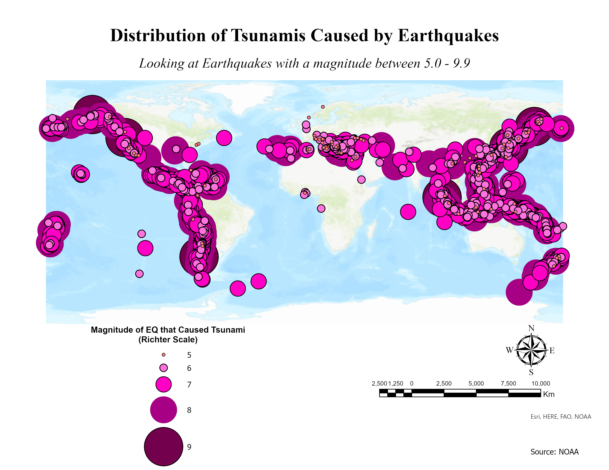

Projects
These projects were executed with the help of a variety of programs, including RStudio, ArcGIS, QGIS, Inkscape, GIMP, MATLAB, and GeoDa. Through these experiences, I gained valuable expertise in working with both vector and raster data.
The links below can be used to view the code and process used to create the outputs.
The Impact of COVID-19 in Wildfire Impacted Areas
- Understanding whether or not a change in the average of COVID-19 cases is related to the presence of a wildfire nearby.
- Used anonymous GPS pings from mobile devices of an area to track population flow patterns utilizing Rstudio and ArcGis.

Distribution of the Land Cover Change in Delhi, India
- Visualized the rate of change in land cover for Dehli.
- Raster data was used in Rstudio.
Raster Analysis: Land Use in California
- Utilized raster data and satellite imagery to differentiate between various forms of land use in QGIS.

Distribution of COVID-19 cases in CA
- Vector data was collected from multiple sources and used in QGIS to create this map.

Distribution of COVID-19 Deaths in CA
-Vector data was collected from multiple sources and used in QGIS to create this map.

Distribution of CA Countie’s Populations

Representing COVID-19 Data
- Representing Real-Time COVID-19 data (at the time) using various different charts and graphs.
- Usng different sources of data in Rstudio to create outputs.

Representing U.S. Cities and Distance
- Visually representing U.S. cities based on population and distance to different borders.

Distribution of Dams in U.S.
- Used different tessellations in order to highlight specific uses of Dams in the U.S. and differentiate between them in a map.
- Vector data was used in Rstudio for the creation of the maps.

Raster Analysis: Floods
- Utilized raster data to study the impact of floods in an area.
- Rstudio was used for this analysis.

Impact of Floods
- Time lapse of the impact on buildings during a flood.
- Raster data was used in Rstudio to create this figure.

Distribution of Tsunamis Caused by Earthquakes
- Historical data of locations of Tsunamis was used to create this map.
- Map was created using QGIS.
